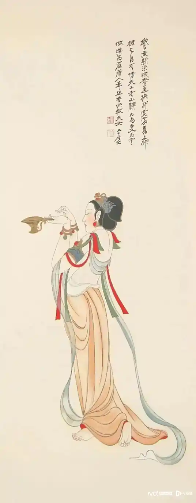
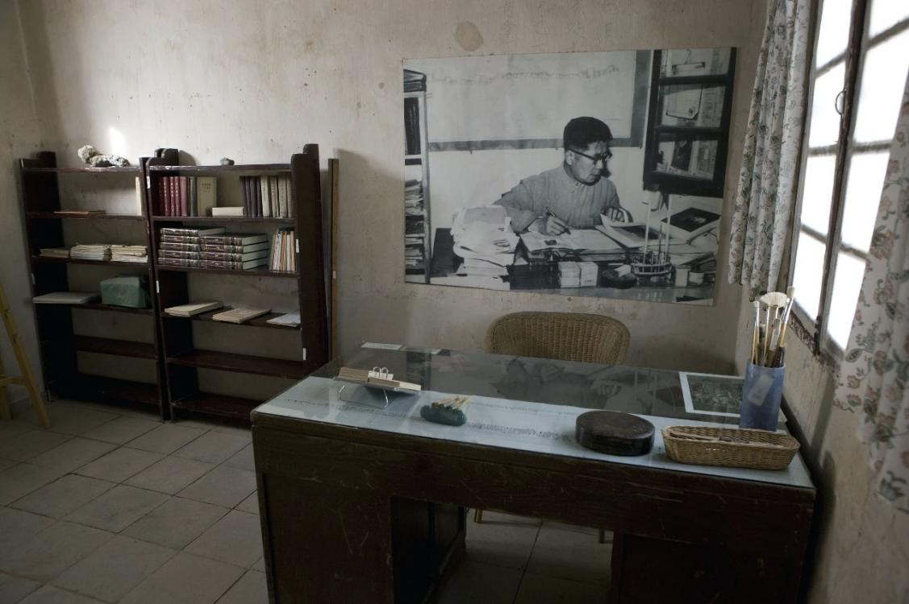

近代复兴先驱
张大千先生是中国画坛的艺术巨匠，是在国内外都具有影响力的艺术大师。他的作品体现了深厚的传统艺术底蕴和对民族艺术的强烈自信，在二十世纪中国画坛具有典型意义。张大千游历世界，获得巨大的国际声誉，被西方艺坛赞为"东方之笔"，又被称为“临摹天下名画最多的画家”。
《敦煌供养人》是张大千1943年后创作的仕女画代表作，体现其敦煌壁画临摹成果对艺术风格的转型影响。该作品通过丰腴人物造型与藻井纹样服饰，突破明清纤弱画风，重现唐代审美范式。2025年经木版水印技艺复刻后，成为首幅大型传统印制作品，标志着木版水印技艺在传统印制领域迈出了突破性的一步。现存于安徽师范大学美术学院藏品体系，是其院藏作品中具有学术价值的重要藏品
1950年代，常书鸿主导莫高窟加固工程，在周恩来总理特批下采用“锚固+混凝土挡墙”技术挽救危崖。他同时将敦煌岩彩引入现代美术教育：在中央工艺美院开设敦煌图案课，指导学生用矿物色临摹藻井纹样；其著作《敦煌壁画中的历代技法》首次分析北魏至元代的设色规律，指出唐代以“叠染法”实现矿物色的渐变过渡。这些实践直接启发了1970年代北京机场壁画群对岩彩的集体复兴。
常书鸿（1904—1994）是中国敦煌艺术保护与研究的奠基者，被誉为“敦煌守护神”。他出生于浙江杭州，1927年赴法国里昂国立美术专科学校学习油画，作品曾入选法国沙龙展。1936年归国后任教于国立北平艺专。1943年，他放弃优渥的都市生活，带领首批团队抵达荒芜的敦煌莫高窟，建立“国立敦煌艺术研究所”（敦煌研究院前身），在无水无电、风沙肆虐的环境中开启长达半个世纪的守护工作。
《敦煌供养人》· 张大千

常书鸿办公室
